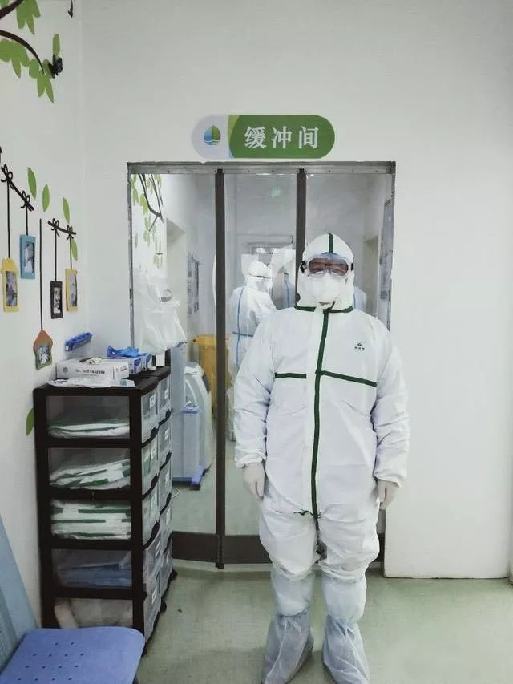

封城一周，湖北人过得怎么样丨单读
原文链接 备份链接 封城已过去一周，在这个谈武汉人、湖北人色变的时候，我们想要好好看一看他们。今天我们挑选的几篇读者来稿，围绕着湖北的武汉和黄冈，讲述他们在旋涡和风暴中心的日子。他们有些住在城市，有些住在乡村和小镇。环境的不同给了他们不 …

卫健委院感防控专家组成员吴安华，是武汉疫情大规模爆发后最早到达现场的专家之一。他也是湖南中南大学湘雅医院感控中心教授，中华预防医学会医院感染控制分会主委。1月21日，他被邀请到武汉指导疫情，消息来得突然，他穿着医院的工作服就出发了——以为疫情并不严重，他只带了一天的换洗衣物，想着很快就能回家过年。但没想到，一待就快一个月了。
到达武汉的第二天，包括吴安华在内的专家组就参与制定了《医疗机构内新型冠状病毒感染预防与控制技术指南（第一版）》，并在之后不断细化，具体到医用口罩怎么戴、怎么脱，洗手的步骤如何，多位医护人员就餐时该怎么坐，房间门把手和按钮怎么消毒。除此之外，吴安华还承担了外地医疗队的感染控制培训工作——所谓感染控制，日常工作包括对医院感染的危险因素检测、分析；指导医院的清洁、消毒灭菌、医疗废物管理；培训医务人员，预防和控制医院感染等等——最忙的一天是大年初一，他给6支队伍分别上课，奔波在不同的驻地，一天跑了270公里。
2月14日下午，在国务院应对新型冠状病毒感染肺炎疫情联防联控机制举行的发布会上，国家卫健委副主任曾益新介绍，截至2月11日24时，全国医务人员确诊新冠肺炎1716例，占全国确诊病例3.8%，其中6人不幸死亡，占全国死亡病例0.4%。湖北医务人员确诊新冠肺炎1502例，其中武汉1102例。
在吴安华看来，这本是不该发生的事情。「我们工作如果做得很扎实的话，至少可以减少很多（医护感染）。院感这个学科现在已经到了非建设不可的时候了，不能再靠热情、奉献，或者靠出一些事情来推动它。」
以下是《人物》与吴安华的对话。
文｜****罗婷
编辑｜****糖槭
《人物》：你是在哪一天到达武汉？
吴安华 ：1月21号。那天我在上班，突然收到通知，没说得特别清楚，就说让我到武汉指导一下感控工作。我穿着工作服，连棉袄都没有，背着一个小包就上了高铁，包里只装了一天的换洗衣服。当时确诊病例还没到1000例，我没想到要在武汉待很长的时间，也没想到疫情会这么厉害，我心想总归要回去的，腊月二十九不回去，腊月三十也会回去的。但没想到，后来就封城了，回不去了。
《人物》：到武汉之后的第一个感受是什么？
吴安华 ：我当天到了防疫指挥部，当时已经有一些专家也来了，第二天我们就到医院去了，到了中南医院和肺科医院，了解了一些整体情况，就发现形势比较严峻，比我们想象中的严峻。首先是病人比较多，我还记得在中南医院ICU我们看到有个医生拄着拐杖上班。你想想，穿着防护服、拄着拐杖上班是什么样子？他们ICU主任说，没有办法，人力太紧张了。
怎么形容呢，应该说我来的时候这个疫情正在滚雪球，越滚越大了，而且还不好预见。那时候谁会预见到这么多病例？这超乎想象。

穿着防护服的吴安华 图源中南大学湘雅医院新闻
《人物》：你们随后开展了什么样的工作？
吴安华 ：首先是开会，小范围开会、和湖北省疾控中心开会，一起讨论对策。我的重点首先是做一些制度，我和北大第一医院的李六亿教授一起做了一个感染防控的方案，国家卫健委已经发布了。也和专家们一起开会，讨论怎么把发热门诊理顺，然后就是培训医务人员，这个培训工作一直持续到今天。
《人物》：当时武汉的发热门诊是一个什么样的状况？
吴安华 ：主要的问题是病人太多了，发热门诊无法承载。而且发热门诊的面积就那么大，排的队很长。当时医生非常累，病人一个接一个停不下来。这个主要矛盾在于，很多病人是需要住院的，但是病床不够，收不进去，都挤在（门诊）这里。后来我们就想多开点门诊，已经开了的门诊也增加一些诊室，就会快一点。不然戴了口罩的病人和没戴口罩的病人挤在一起，也容易交叉感染。
《人物》：感染控制一直都是一项很重要的工作，特别是当出现这么重大的传染病，一般感染控制工作的程序是怎样的？
吴安华 ：一般来说会有一个应急预案，但今年的情况太急太严重了，谁也想不到。我们湘雅的病例比较少，当时还是做了充分的准备，把发热门诊和隔离病房都安排出来了，也安排了人力。但是防护物资是不够的，我们是储备了一点，但是不多，因为现在老是讲提高效率，要「零库存」，突然有大量的需求，后面也紧张了。
《人物》：在医护感染方面，我们也看到了最新公布的数据，全国已有1716名医护人员确诊感染，你觉得这种情况为什么会出现？
吴安华 ：有的病人并不是因为这个病住院的，住院之前其实已经感染了，在住院过程中他才表现出来。他表现出来了，但是表现又不典型，我们医护人员很难很早就能识别它，这个疾病本身比较诡异，增加了识别的难度。再加上又缺乏快速诊断的方法。
在病人表现出症状前，我们医务人员已经感染了，他们还可以传给其他人，包括家人。这个后果是很严重的。
《人物》：你在了解医护人员感染情况的过程中，有没有印象特别深的事情？
吴安华 ：我只是在想，单单武汉市就超过一千医护感染，一千多人意味着什么？可以单独再开一家医院了。而且他们中的很多人都是骨干。到现在为止，离开我们的也有几位了，都是年轻力壮的。是没有防护条件吗？主要发生在疫情早期，防护物质应该不匮乏呀。个中原因，必须深思。
而且医务人员感染了，实际上对民众也是个打击，连医生都不能保护自己了，那我们还有救吗？这很打击士气。所以感染控制真的还是个特别重要的问题。

吴安华 图源中南大学湘雅医院新闻
《人物》：很多人都是在这次疫情中才第一次听说院感科这个科室，院感科在医院里是一个什么样的存在？日常的工作都有哪些？
吴安华 ：院感科在国内应该是90年代开始就有了，真正发文明确是在2006年。这是因为SARS之后国家开始反思这个问题，所以发了《医院感染管理办法》，规定病床在100张以上的医院，就应该设立医院感染管理部门。这个办法对院感科的职责有明确界定，一共是12条：包括对医院感染的危险因素检测、分析；指导医院的清洁、消毒灭菌、医疗废物管理；培训医务人员，预防和控制医院感染等等。
但实际上，现在也没有人去关注这个办法到底落实得怎么样。按要求一般每1000张病床至少配4个感染控制人员，但现在有的医院2000张床也只有4个人，他们可能还要承担别的工作。在我看来，院感发展不好，人才不够是根本原因之一。
《人物》：为什么会出现人才不够的状况？
吴安华 ：这是一个人才储备问题。我们国家没有一个专业叫感染控制，所以院感科的工作人员都是从其他专业转过来的。有的人是觉得做这个事情有意义，有的是没地方去了，还有的是觉得院感科很轻松。也正是因为感染控制不是一个专业，院感科的员工没有办法像医生一样晋升，可以从主治医生到副主任医生，你只听说有内科医生、外科医生，没有听说有院感医生吧？所以院感科是很难留住人才的。人才留不住，队伍都不稳定，你怎么做事情。
《人物》：还有人说它平常是个又花钱又挑毛病的部门。
吴安华 ：对，其实它不是挑毛病，主要目的是提高质量。它要花钱，但是医院花钱也不是院感科一个科，其他的科也花钱。医院要重视感染控制，不能老是想，平时我能压缩就压缩，能够减少一个人就减少一个人，而是应该按照国家要求，来建设这样一个科室，来扶植它的人才。其实这个科还是挣钱的，但是挣钱人家看不到——因为它可以帮医院省钱，预防做得好能省很多钱。
《人物》：据你所知，感控体系建设得比较好的国家有哪些？
吴安华 ：美国和英国都还不错。有时候跟他们交流，他们有一套自己的评价体系，人员怎么培训、怎么晋升，他们的感控部门话语权更大，这是一个逐步建设的过程。像我们国家，去年院感被大家看到了，是因为出了两个事故——一个是广东顺德的新生儿在医院感染，一个是江苏东台69名血透患者，在医院感染丙肝。我觉得很悲哀，我们没有一个基础，老是靠这样的方式推动。
《人物》：就像这一次的武汉疫情。
吴安华 ：这一次闹得这么大，假如我们这个应急机制比较好、人的意识比较强、措施比较得力，它一定要发展到六万例吗？我们本应该能够让它在一万例的时候就刹车，最多再往外跑一点，跑到一万五。医护感染也是一样的，我们原来工作如果做得很扎实的话，至少可以减少很多啊。所以院感这个学科现在已经到了非建设不可的时候了，不能再靠人家的热情、奉献，靠出事来推动它。
《人物》：后来你也一直在帮医护人员做培训，能否介绍一下这方面的工作？
吴安华 ：我们做培训主要是针对外地到武汉的医疗队，每一支队伍都要做培训。我培训的人可能差不多有一万人了。我每天不停地上课。大年初一那天，我上了六场，跑了270公里，去了六个不同的地方，但是我很感动。为什么感动，因为很多医疗队都是大年三十出发的，年夜饭都没有吃就来了，有上海的、江苏的、广东的医疗队，大家都是没有怨言，说走就走。
《人物》：在准备的所有内容里，你觉得最重要、一定会跟他们讲的话是什么？
吴安华 ：每一堂课，我第一个强调的是疫情的严重性和传染性。然后会告诉我们的医疗队员，怎么预防感染——最关键的，戴口罩，做手卫生。我每一堂课就特别强调这两点。虽然其他措施也重要，但我把这两个作为关键来讲。面授的时候我会随机发挥，可以通过举例子，让大家有个深刻的印象。
比如说这个口罩，它本来是一个比较好的口罩，像你现在戴的医用防护口罩，它能够阻止0.3微米的颗粒。0.3微米很小。它能够阻止0.3微米的颗粒95%，很好了吧？戴个这么好的口罩，假如你没戴好，没有做密合性实验，它边上漏风了，不仅仅0.3微米可以进去，3个微米都可以进去，10个微米也可以进去。你不做密合性检查，那就等于没有戴。这个有方法的，你一教大家都会做的。
我还告诉他们，千万不要想，我来这里支援一个月，能够减五斤肉，我说如果有这个计划的都要停下来，有减肥的，瘦身的都要停下来。假如睡不好又吃不好，你抵抗力会下降，很危险。

吴安华在进行岗前培训 图源中南大学湘雅医院新闻
《人物》：其实很多医护之前可能从来没接触过这个等级的传染病，也没有做过这个级别的防护，他们都会问些什么样的问题？
吴安华 ：有人会问下班了之后洗澡要洗多长时间？因为有人告诉她要洗半个小时，但其实没这么机械，大致洗干净就好了。还有人问在自己房间里戴不戴口罩？其实我个人认为不需要，但为了引起他们重视，我说看你们自己的习惯，你戴口罩睡觉都可以。
有了气溶胶传播的说法之后，有人问，在酒店能不能开窗户，每天能开几次、多长时间？这说明大家还是有恐惧的，我就大胆告诉他们，只要你窗外没人咳嗽、打喷嚏，你爱开多久开多久，不是武汉的天空都飘新冠病毒的气溶胶，它已经稀释了。他们会提很多很有趣的问题，所以每天上课，尽管辛苦，也很有意思。
《人物》：据我们所知有很多医疗队是立下了零感染的军令状的。
吴安华 ：是的，但是我也跟他们讲了，如果万一有人发烧了，千万一定要报告，千万不要觉得自己为了表现好，还带病上班。我说这个时候你带病上班，不但不要表扬，还要批评。我每节课都要讲，我很高兴看到你们大家都平平安安来了，我最希望的就是你们大家能够平平安安回去。而且是大家一块回去，不要留下哪一个人还在这里治疗肺炎。他们就会笑。到目前为止，外地来支援的医疗队，应该是还没发现一例感染。
《人物》：今天来之前，我读到华西医院来支援武汉的一位医生的日记，她说也许没有任何一个社会有应对这种传染病的准备，它是持续不断的冲击，对物资、人员的消耗是持续的，且并不知道会有多久。我们可以全身而退吗？在这个情况下会感觉人类还是很渺小的。
吴安华 ：其实也不需要这么说，只要我们有准备，再出现类似的事情，我们一定可以处理得更好。尤其是这些年，比如说登革热、寨卡病毒感染，比如说MERS，还有布尼亚病毒，我们都应对得比较好。
其实我们国家前两年做过一次传染病应急演练的，因为是演练，结果当然是不错。这一次也不知道为什么，会搞这么大的事情。如果早一点控制，尽管当时可能要花很多钱，要花很多人力，但是不管怎么花，你现在想起来都是值得的，永远不要忘记传染病对我们人类的威胁。
没看够？
长按二维码关注《人物》微信公号
更多精彩的故事在等着你

长按二维码向我转账
受苹果公司新规定影响，微信 iOS 版的赞赏功能被关闭，可通过二维码转账支持公众号。
原文链接 备份链接 封城已过去一周，在这个谈武汉人、湖北人色变的时候，我们想要好好看一看他们。今天我们挑选的几篇读者来稿，围绕着湖北的武汉和黄冈，讲述他们在旋涡和风暴中心的日子。他们有些住在城市，有些住在乡村和小镇。环境的不同给了他们不 …
原文链接 备份链接 这一周，有超过500位读者同我们分享了自己关于爱的故事。今天，我们选取了其中的一些故事，以配合这个名为「情人」的节日——今时今日，这一天似乎看起来不合时宜，但正是因为今时今日，我们才该庆幸，还好，我们还有爱情。 策 …
原文链接 备份链接 *************▲*************1月29日，钱珵戴着用文件袋改装的面罩，在医院抽完血后自拍。 （受访者供图/图） 全文共4492字，阅读大约需要10分钟。 这次疫情有影响到我最近写剧本的内容， …
原文链接 备份链接 点击上图，一键下单** 【武汉现场：抗击新冠肺炎】** 记者 | 吴琪 我从没见过这样的汉口火车站。 1月23日，大年二十九。上午8点40分、50分，墙上的时钟往前走，随着一拨拨人上车，庞大的候车大厅，像被一支巨大的 …
原文链接 备份链接 临时报道小组 所有的鱼 所有的鱼 About Feature 地球被毁灭之前究竟发生了什么？ Today 根据丁香医生实时数据，截至 2020 年 2 月 8 日 18 时，全国累计确诊病例 34662 例， …